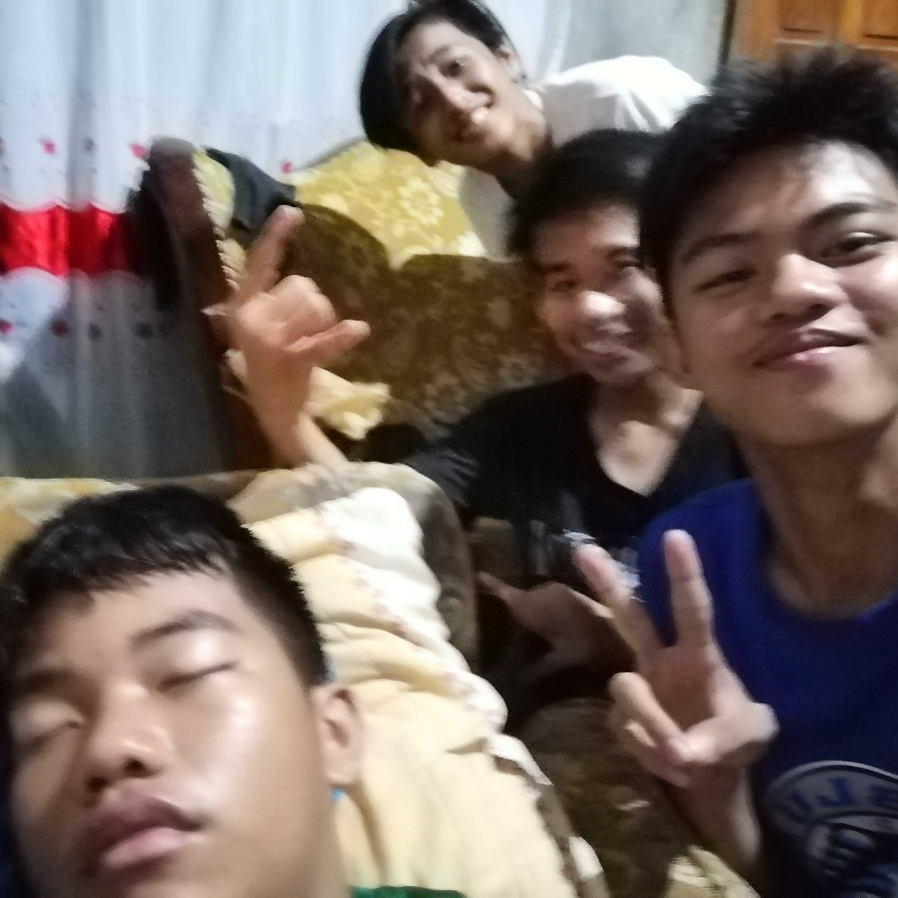
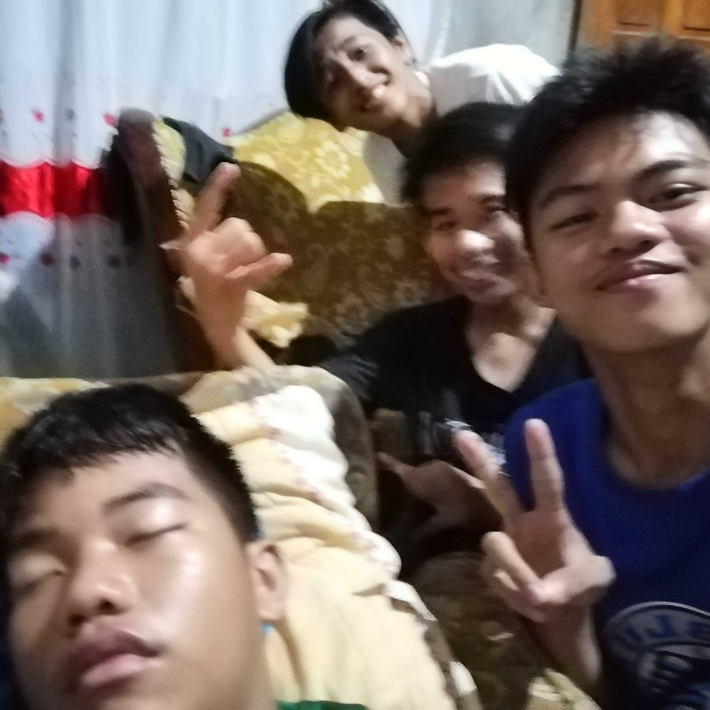

WHO
Hi! I'm Cedric Angulo
I developed a passion for computers and programming during a high school TLE course. As a senior ICT student, I am currently learning JavaScript and excited to master it and learn more languages. My interest in computers started in grade 10 when I was surprised to discover that everything on a website is made with HTML and CSS!
My Goal
I hope to study computer science or information technology in college and pursue a career in the tech industry. While I may not have all the experience or knowledge of a seasoned professional, I am eager to learn and grow in these fields. My goal is to make a positive impact on the world through my work in technology, and I am still considering which field will best allow me to achieve this goal.


 

Accordion Content 1
Accordion Content 2
Accordion Content 3